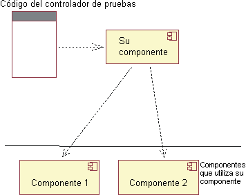
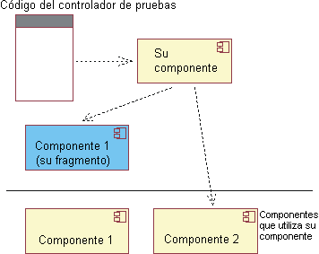

| Concepto: Fragmentos para simulación |
 |
|
| Elementos relacionados |
|---|
IntroducciónLos componentes se prueban mediante el envío de entradas a la interfaz, hay que esperar a que el componente las procese y, a continuación, comprobar los resultados. En el curso de este proceso, es muy probable que un componente utilice otros componentes enviándole entradas y utilizando sus resultados.  Figura 1: Prueba de un componente que implementó Los otros componentes pueden causar problemas a la prueba:
Para evitar estos problemas, puede decidir utilizar componentes fragmento para simulación (también llamados objetos de simulacro). Los componentes de fragmento para simulación se comportan como componentes reales, por lo menos en cuanto a los valores que les envía el componente mientras responde a las pruebas. Estos componentes pueden ir todavía más allá: pueden ser emuladores generales que pretenden imitar fielmente la mayoría o todos los comportamientos del componente. Por ejemplo, suele ser una buena estrategia construir emuladores de software para hardware. Los emuladores se comportan igual que el hardware, pero son más lentos. Son útiles porque soportan una mejor depuración, hay más copias disponibles y se pueden utilizar antes de que termine el hardware.  Figura 2: Prueba de un componente que implementó apagando un componente del que depende Los fragmentos para simulación tienen dos desventajas.
Prácticas de diseño de software y fragmentos para simulaciónA no ser que los fragmentos para simulación se hayan construido porque el componente real todavía no estaba disponible, lo normal es retenerlos hasta después del despliegue. Es probable que las pruebas a las que dan soporte sean importantes durante el mantenimiento del producto. Por lo tanto, los fragmentos para simulación deben escribirse con estándares superiores al código desechable. No es necesario que los fragmentos para simulación cumplan los estándares de código del producto (por ejemplo, la mayoría no necesitan un conjunto de aplicaciones de prueba propio), pero después los desarrolladores tendrán que mantenerlos como componentes del cambio de producto. Si este mantenimiento es demasiado difícil, los fragmentos para simulación se rechazarán y se perderá la inversión realizada en ellos. Los componentes, sobre todo cuando hay que retenerlos, alteran el diseño de componentes. Por ejemplo, suponga que el componente va a utilizar una base de datos para almacenar pares clave/valor de forma permanente. Considere dos casos de ejemplo de diseño: Caso de ejemplo 1: La base de datos se utiliza para las pruebas y para su función normal. No es necesario ocultar al componente la existencia de la base de datos. Puede inicializarlo con el nombre de la base de datos:
public Component(
String databaseURL) { try { databaseConnection = DriverManager.getConnection(databaseURL); ... } catch (SQLException e) {...} }
Aunque no desease que todas las ubicaciones que leyeron o escribieron un valor construyan una sentencia SQL, seguro que ha tenido varios métodos que contienen SQL. Por ejemplo, el código del componente que necesite un valor puede invocar este método del componente:
public String get(String key) { try { Statement stmt = databaseConnection.createStatement(); ResultSet rs = stmt.executeQuery(
"SELECT value FROM Table1 WHERE key=" + key); ... } catch (SQLException e) {...} }
Caso de ejemplo 2: En la prueba, la base de datos se sustituye por un fragmento para simulación. El código del componente debería tener el mismo aspecto independientemente de si se está ejecutando en la base de datos real o en el fragmento para simulación; por lo debe codificarse para que utilice métodos de una interfaz abstracta:
interface KeyValuePairs { String
get(String key); void
put(String key, String value); }
Las pruebas implementan KeyValuePairs con algo simple, como una tabla hash:
class FakeDatabase implements KeyValuePairs { Hashtable table = new Hashtable(); public String
get(String key) { return (String) table.get(key); } public void
put(String key, String value) { table.put(key, value); } }
Cuando no se utiliza en una prueba, el componente utiliza un objeto adaptador que
convierte llamadas a KeyValuePairs en sentencias SQL:
class DatabaseAdapter implements KeyValuePairs { private Connection databaseConnection; public DatabaseAdapter(String databaseURL) { try { databaseConnection = DriverManager.getConnection(databaseURL); ... } catch (SQLException e) {...} } public String
get(String key) { try { Statement stmt = databaseConnection.createStatement(); ResultSet rs = stmt.executeQuery( "SELECT value FROM Table1 WHERE key=" + key); ... } catch (SQLException e) {...} } public void
put(String key, String value) { ... } }
Puede que el componente tenga un solo constructor para las pruebas y para otros clientes. Dicho constructor escogerá un objeto que implemente KeyValuePairs. O puede que sólo proporcione esa interfaz para las pruebas y requiera que los clientes ordinarios del componente pasen el nombre de una base de datos:
class Component {
public Component(String databaseURL) { this.valueStash = new DatabaseAdapter(databaseURL); } // For testing.
protected Component(KeyValuePairs valueStash) { this.valueStash = valueStash; } }
Desde el punto de vista de los programadores del cliente, los dos casos de ejemplo de diseño producen la misma API, aunque uno es más fácil de probar. (Tenga en cuenta que algunas pruebas pueden utilizar la base de datos real y otras la base de datos del fragmento para simulación). Más informaciónPara obtener más información relacionada con los fragmentos para simulación, consulte lo siguiente:
|
© Copyright IBM Corp. 1987, 2006. Reservados todos los derechos. |